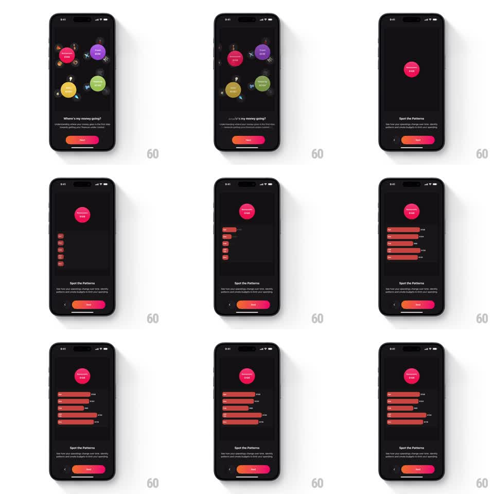

Media
Frame-by-frame

Rebuild this animation 1:1: Finma's Spot the Patterns transition - the floating category bubbles of "Where's my money going?" collapse into the single pink Restaurants bubble (shared element), which rides to the top of the "Spot the Patterns" page as staggered horizontal red bars grow beneath it into a monthly chart.

Rebuild this animation 1:1: Finma's Spot the Patterns transition - the floating category bubbles of "Where's my money going?" collapse into the single pink Restaurants bubble (shared element), which rides to the top of the "Spot the Patterns" page as staggered horizontal red bars grow beneath it into a monthly chart. ## Integration Integration: stack-agnostic spec - springs given as stiffness/damping, timed motions as duration + curve; map every value to your framework and animation library of choice. ## Scene Dark onboarding. Page 1 "Where's my money going?": floating colored bubbles with amounts (pink "Restaurants $108", purple "Travel $234", yellow, green "Groceries $123") drifting with small icons. Page 2 "Spot the Patterns": the pink Restaurants bubble ($108) anchored at top, and below it a chart of horizontal red bars (months Jan-Dec) of varying widths with value labels. Title, "See how your spendings change over time, identify patterns and create budgets to limit your spending" subcopy, pager, gradient Next pill. ## Motion spec Pattern: shared-element bubble with staggered bar growth. - Advance: the non-pink bubbles scatter outward and fade (translate away radially, 300ms, 30ms stagger) while the pink Restaurants bubble travels to the top-center slot (arc, spring ~300/20, 400ms) and shrinks slightly (scale 0.85). - The page title/subcopy crossfade in place (200ms). - Bars: each month's red bar grows from zero width (600ms, ease-out) in a top-to-bottom stagger (50ms apart), its value label fading in at the bar's end when growth completes (150ms). - The bubble gently bobs after landing (translateY +-3pt, 3s loop). - Back: bars shrink away (reverse stagger, 300ms) and the bubbles regather (springs, 400ms). ## Calibration - The pink bubble is visually identical on both pages - one element, two homes. - Bars are all the same red; length carries the data. ## Reduced motion Pages crossfade (250ms); bars appear fully grown. ## Don't miss - The bubble keeps "$108" legible through the flight - it never flips or spins. - The bar stagger is quick enough to read as one wave, not twelve events.